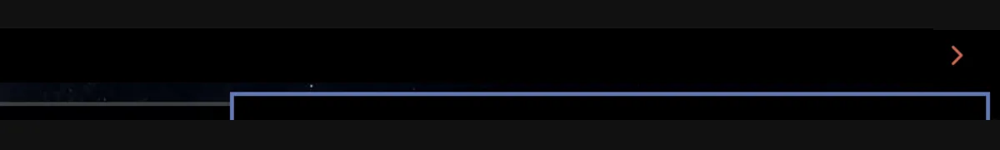
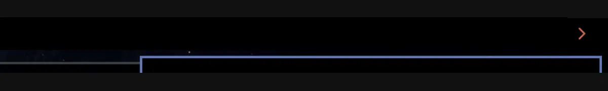

Per-monitor control
Leave one output expanded, collapse another, or mix click and hover behavior. State follows the monitor name, not a fragile numeric ID.
Omarchy Shell plugin · v{{VERSION}}
A fast, per-monitor drawer that keeps Omarchy's stock bar alive and slides secondary widgets into view exactly when you ask.
Independent state on every monitor. Hover or click. Your choice.
What changes
App Drawer changes widget visibility. It leaves the stock bar, background services, and existing widgets mounted.
Leave one output expanded, collapse another, or mix click and hover behavior. State follows the monitor name, not a fragile numeric ID.
Taskbar wipe, cascade, soft cascade, uniform reveal, and instant modes with configurable curves and duration.
Keep essentials such as power or battery outside the drawer while secondary widgets remain tucked away.
The drawer remains open while the pointer crosses the entire revealed bar, with a bounded close delay.
No replacement bar and no duplicate services. Existing taskbar, backgrounds, tray items, and shell state stay intact.
Appearance and behavior
Choose the glyph direction, spacing, colors, click or hover behavior, duration, curve, and reveal style.


Runtime behavior
Generation-tagged registrations, bounded retries, field-level coalescing, and exact monitor routing prevent stale instances from winning.
Versioned status, monitor controls, strict modes, normalized payloads, and visible commit failures make automation inspectable.
Pure invariants, isolated QML harnesses, crash guards, live IPC checks, and concurrent stress preserve the persistent shell.
Install
Requires Omarchy Quattro 4.0 or newer.
omarchy plugin add https://github.com/bolens/omarchy-app-drawer.git --enable
scripts/migrate-to-stock-barProject documentation